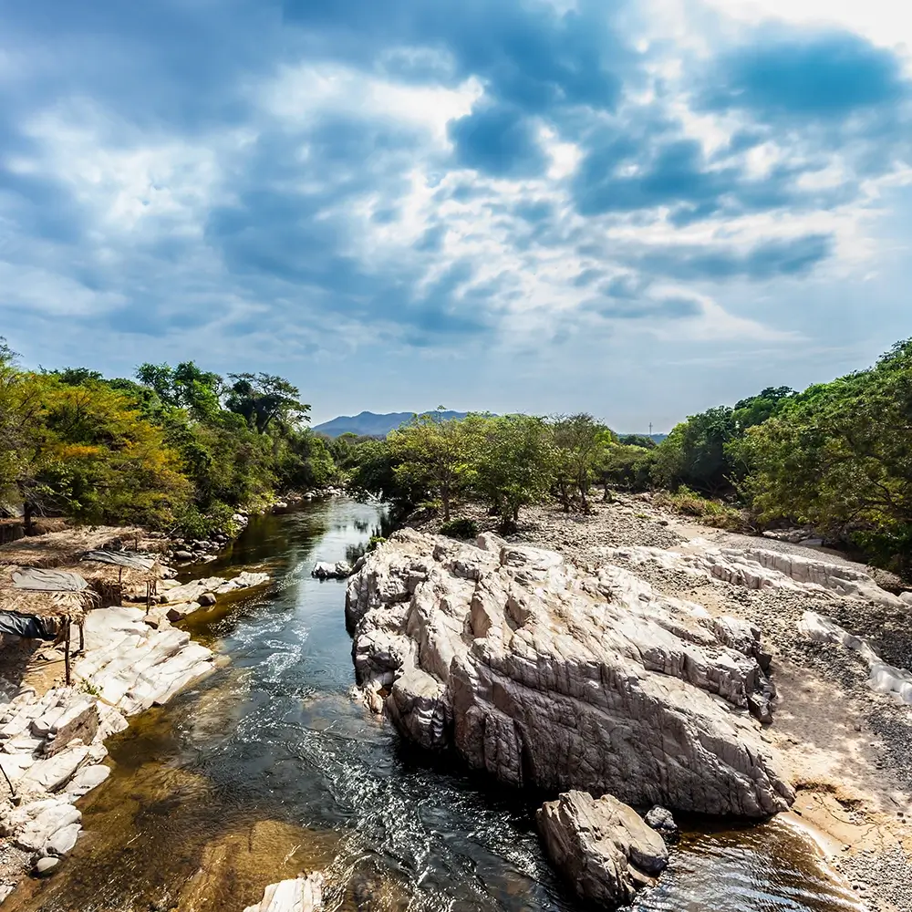
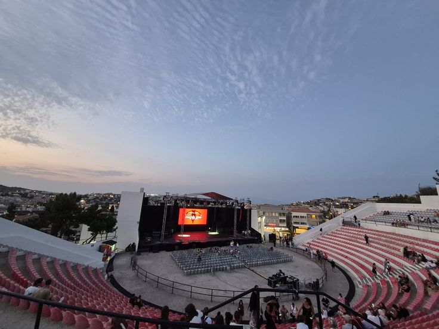
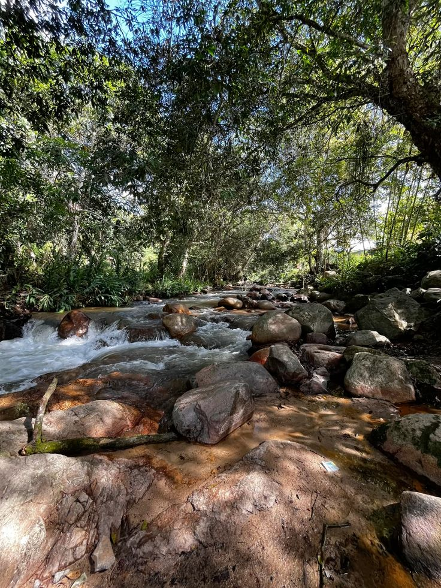
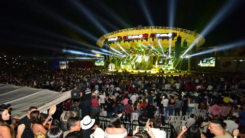

Descubre el Cesar
El Cesar es un departamento lleno de música, cultura y tradiciones. Su capital, Valledupar, es reconocida como la cuna del vallenato, Patrimonio Cultural Inmaterial de la Humanidad, y atrae turistas nacionales e internacionales cada año con el Festival de la Leyenda Vallenata.
En A&G TOURS brindamos transporte turístico y empresarial para conocer el Cesar, desde sus rutas musicales y festivales hasta atractivos naturales como la Sierra Nevada de Santa Marta y el río Guatapurí. Nuestro servicio se enfoca en la seguridad y puntualidad que los viajeros necesitan.
Si buscas turismo en el Cesar, somos tu mejor opción para descubrir la cultura vallenata y la diversidad de esta región de Colombia con confianza y confort.
Río Guatapurí
El río Guatapurí, ubicado en Valledupar, es uno de los atractivos naturales más emblemáticos del Cesar. Sus aguas cristalinas rodeadas de piedras blancas y naturaleza hacen de este lugar un sitio ideal para disfrutar de un baño refrescante y de la cultura vallenata, que lo menciona en cantos y leyendas.
Monumento a la Revolución Vallenata
Este monumento es uno de los símbolos culturales más representativos de Valledupar. Rinde homenaje a los juglares y al folclor vallenato, mostrando figuras en ascenso que evocan la fuerza, identidad y tradición musical que caracteriza al pueblo cesarense.
Parque de la Leyenda Vallenata
El Parque de la Leyenda Vallenata Consuelo Araujonoguera es el escenario principal del Festival de la Leyenda Vallenata. Allí se reúnen los mejores intérpretes de acordeón, caja y guacharaca para mantener viva la tradición musical más importante del Cesar.
Balneario Hurtado
El Balneario Hurtado, a orillas del río Guatapurí, es un punto de encuentro para turistas y locales. Sus aguas frías y cristalinas, acompañadas de música vallenata en vivo, crean un ambiente festivo y cultural único en Valledupar.
Pueblo Bello
Pueblo Bello es un encantador municipio del Cesar ubicado en las faldas de la Sierra Nevada de Santa Marta. Reconocido por su clima fresco y sus paisajes montañosos, es un punto de encuentro con la cultura indígena arhuaca y un destino ideal para los amantes del turismo ecológico y la tranquilidad.
Balneario La Mina
El Balneario La Mina, ubicado en el municipio de La Paz (Cesar), es un paraíso natural famoso por sus aguas cristalinas que recorren piedras y forman pozas naturales. Es un lugar perfecto para disfrutar de un baño refrescante, realizar un picnic y conectarse con la tranquilidad de la naturaleza.
Festival Vallenato Valledupar
El Festival Vallenato es uno de los eventos más importantes de la música folclórica en Colombia. Se celebra anualmente en Valledupar, rindiendo homenaje a la tradición vallenata y a sus exponentes más destacados. Durante el festival, la ciudad se llena de música, color y alegría, atrayendo a turistas y amantes del folclor de todas partes.
Serranía del Perijá
La Serranía del Perijá es una cadena montañosa que hace parte de la Cordillera de los Andes y que atraviesa el Cesar en la frontera con Venezuela. Es un destino ideal para el turismo de naturaleza, con paisajes de montaña, páramos, aves endémicas y ríos cristalinos. Además, es territorio ancestral de comunidades indígenas Yukpa y Kankuamas, lo que permite un acercamiento cultural único. Perfecto para los amantes del senderismo, la fotografía y la tranquilidad.
¡Contáctanos!